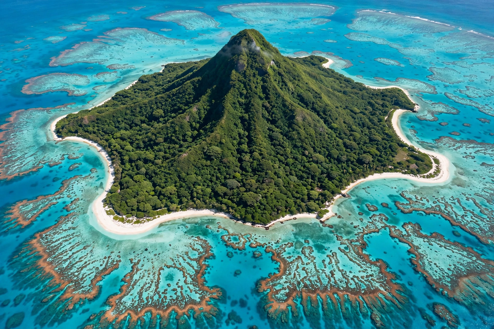

[Image placeholder: A Lesser Antilles island, showing the volcanic arc of the eastern Caribbean]The **Antilles** is an archipelago region of the Caribbean bounded by the Caribbean Sea to the south and west, the Gulf of Mexico to the northwest, and the Atlantic Ocean to the north and east. The Antilles are divided into the larger Greater Antilles — Cuba, Hispaniola (Haiti and the Dominican Republic), Puerto Rico, Jamaica and the Cayman Islands — and the Lesser Antilles, the long arc of small volcanic and coral islands running from the Virgin Islands to the South American coast.
The name derives from Antilia, a phantom island on medieval maps. The islands were home to Taíno, Kalinago (Carib) and other Indigenous peoples before European colonisation from 1492 onward transformed their demography through disease, slavery and plantation agriculture; today the Antilles span more than a dozen sovereign states and many territories, speaking Spanish, French, English, Dutch and Creole languages.
The Greater Antilles are continental in character with substantial mountain ranges (Cuba's Sierra Maestra, Hispaniola's Pico Duarte, the Caribbean's highest point). The Lesser Antilles form the volcanic island arc above the subduction zone where the Atlantic plate sinks beneath the Caribbean plate; active volcanoes include Soufrière Hills (Montserrat) and La Soufrière (St Vincent).
Sugar plantations and enslaved African labour defined the colonial Antilles; Haiti's revolution (1791–1804) created the first state founded by formerly enslaved people. The twentieth century brought US influence, decolonisation, tourism and offshore finance. Hurricanes remain an existential economic threat.